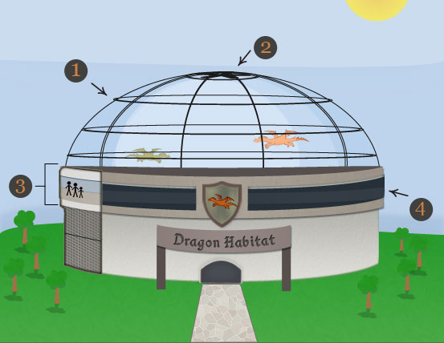
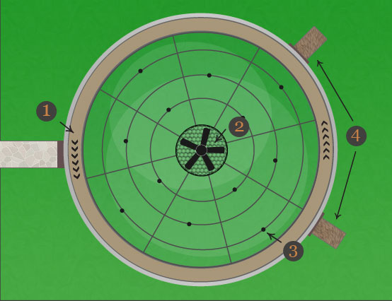
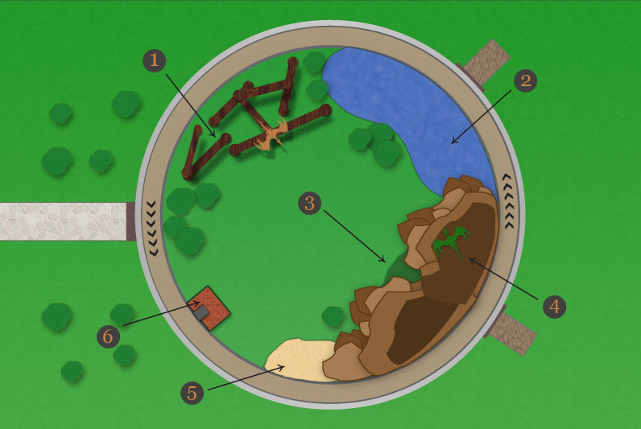

The Structure
Outside Front View
- Glass Dome: Designed to keep the dragons from flying away. It also provides them with natural sunlight. The steel bars add strength and support.
- Smoke Fan: This fan automatically clears smoke from the dome when dragons breath fire.
- Dragon Viewing Hall - Inside view: Visitors enter the structure and go up to the 3rd floor where they can safely view the dragons through 6 inch thick glass.
- Zoo Viewing Glass: This allows visitors to not only enjoy viewing the dragons but also the rest of the zoo.

Aerial View - Frame
- Dragon Viewing Hall: This hallway circles the entire habitat for a 360 degree view. The viewing hall is a safe 3 stories high.
- Smoke Fan Guard: This wire mesh material protects the dragons from hitting the fan.
- Sprinkler System: The black dots are sprinklers. Although everything in the habitat is fire resistant, the sprinklers are capable of putting out any fires throughout the habitat.
- Emergency Exits: Every structure needs them. You are never too far away from an emergency exit.

The Habitat

- Dragon Playground: This playground is like a jungle gym for dragons. It keeps them happy and their energy levels in control.
- Swimming Pond: The Pond allows dragons to keep clean and cool on hot summer days.
- Dragon's Lair: Dragons can be very lazy creatures. The dragon's lair is where they go to get peaceful rest.
- Basking Rock: The Basking rock is the highest point in the habitat, which allows fthe dragons to get plenty of sunlight and bask in the sun.
- Litter Box: You read it right. Yes, Dragons can be trained to use a litter box. Keeping the mess out of their habitat is important in keeping them happy and healthy.
- Food Dispenser: The food dispenser allows zoo employees to feed the dragons from a safe distance.